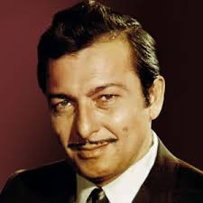

Madan Mohan

Madan Mohan, was an Indian music director of the 1950s, 1960s, and 1970s.
He is particularly remembered for the ghazals he composed for the film industry.
He often worked with Lata Mangeshkar, Talat Mahmood and Mohammed RafiHe scored his first big break
with the film Aankhen (1950 film) in 1950. His next film was "Adaa" which saw the beginning of a long lasting collaboration
with Lata Mangeshkar; who would go on to sing for many of his films.
In 1957 he came out with a film named Dekh Kabira Roya in which the legendary singer Manna Dey
gave his voice to the melodious Kaun Aaya Mere Man Ke Dwaare and unforgettable numbers like Tum Bin Jeevan Kaisa Jeevan in
the film Bawarchi. In addition to that, he had Lata sing Tu Pyaar Kare Ya Thukraaye and Meri Veena Tum Bin Roye numbers,
and he used Talat Mahmood for the song Hum Se Aaya Na Gaya in the same movie.
The late fifties, sixties and the early seventies were the most productive period in Madan Mohan's career.
His songs from those decades include compositions for films like Adalat, Anpadh, Dulhan ek raat ki, Mera Saya, Dastak, Hanste Zakhm, Heer Raanjha, Maharaja, and Mausam, among many others. His second last bow was for a film released five years after his death, Chalbaaz. In 1970, during the changing times of western music he gave music based on ragas for Rajinder Singh Bedi's Dastak and won his only 1971 National Film Award for Best Music Direction. Its songs sung by Lata Mangeshkar are still considered her finest.[9]
Madan Mohan's son Sanjeev Kohli recreated 11 of his late father's unused compositions for the soundtrack of the 2004 Yash Chopra film
Veer-Zaara which went on to become the most successful album of the year.